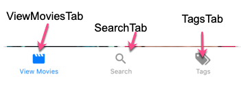

React Navigation V5
Version 5 of React Navigation breaks out each navigation component into different packages that you will import. For most navigation scenarios, I use the following:
$ yarn add @react-navigation/native @react-navigation/stack @react-navigation/bottom-tabs @react-navigation/drawer
You will also need to install some other dependencies. If you are using Expo, then run this:
$ expo install react-native-gesture-handler react-native-reanimated react-native-screens react-native-safe-area-context @react-native-community/masked-view
If you are not using Expo, then check out the docs on installing dependencies for a bare React Native Project.
Quick Start Sample
Simple example with a Stack Navigator.
import React from 'react'
import { Button, Text, View, StyleSheet } from 'react-native'
import { createStackNavigator } from '@react-navigation/stack'
import { NavigationContainer } from '@react-navigation/native'
const Root = createStackNavigator()
const Screen1 = ({ navigation, route }) => (
<View style={styles.screen}>
<Text style={styles.title}>Screen 1</Text>
<Button
title="Go to Screen 2"
onPress={() => {
navigation.push('Screen2')
}}
/>
</View>
)
const Screen2 = ({ navigation, route }) => (
<View style={styles.screen}>
<Text style={styles.title}>Screen 2</Text>
<Button
title="Go back"
onPress={() => {
navigation.pop()
}}
/>
</View>
)
export default function App() {
return (
<NavigationContainer>
<Root.Navigator>
<Root.Screen name="Screen1" component={Screen1} />
<Root.Screen name="Screen2" component={Screen2} />
</Root.Navigator>
</NavigationContainer>
)
}
const styles = StyleSheet.create({
screen: {
marginTop: 40,
alignItems: 'center',
},
title: {
padding: 20,
fontSize: 42,
},
})
Hooks
useNavigation
import * as React from 'react';
import { Button } from 'react-native';
import { useNavigation } from '@react-navigation/native';
function MyBackButton() {
const navigation = useNavigation();
return (
<Button
title="Back"
onPress={() => {
navigation.goBack();
}}
/>
);
}
Focus Hooks
useIsFocused, useFocusEffect are hooks that can trigger an action when a screen is focused. The main difference is the the useIsFocused hook will cause a rerender, where the useFocusEffect will just run the code inside it. React Navigation v5 docs
useNavigationState
Get an object like this:
NOTE: While you will get all of the "routeNames" showing the routeNames array, the "routes" array will ONLY have those routes that have been accessed at the point in time that the
useNavigationSatehook is called.
{
"index": 0,
"key": "stack-p6lpGC7O_CJSchw18551-",
"routeNames": Array [
"Movies",
"Filter",
],
"routes": Array [
Object {
"key": "Movies-CjT0WvbtoG5b5oEAe9Tl9",
"name": "Movies",
"params": undefined,
},
],
"stale": false,
"type": "stack",
}
I had a use for this, since the route prop passed to screens only contains information on the current route. I wanted to get the route key for a particular route, so used this hook to get it.
You will usually call this hook with a function that accepts state as its parameter. You can then return the value that you want.
Here is the code I used to get the route key for the Movies route
const moviesKey = useNavigationState((state) => {
return state.routes[state.routeNames.indexOf("Movies")].key;
});
Helpers
These are functions that provide quick ways to get at information that is needed.
getFocusedRouteNameFromRoute
This is useful determining the header title based on the navigation state. If you have a modal stack, this will be useful.
import { getFocusedRouteNameFromRoute } from '@react-navigation/native';
function getHeaderTitle(route) {
// If the focused route is not found, we need to assume it's the initial screen
// This can happen during if there hasn't been any navigation inside the screen
// In our case, it's "Feed" as that's the first screen inside the navigator
const routeName = getFocusedRouteNameFromRoute(route) ?? 'Feed';
switch (routeName) {
case 'Feed':
return 'News feed';
case 'Profile':
return 'My profile';
case 'Account':
return 'My account';
}
}
Stack Navigator
Navigate to a Specific Screen
This should apply to navigation to any screen, regardless of what type of Navigator it is located in. To navigate to a specific screen, you will most likely be using the navigation prop. It has several functions for navigation.
navigation.goBack() - moves backwards in your history stack of screens.
navigation.navigate('route name') - Must pass a route name to navigate to. If you have nested navigators, I believe you can pass a second object with your own specific params and/or a
screenparam that will be a sub screen to navigat to.
Navigate to Nested Screens
You can navigate to nested screens using the navigation.navigate function.
The thing to understand is that the second parameter object contains params, plus if you use screen as one of the object properties, it will navigate to the screen.
For example, let's say you have a bottom tab with three tabs and a stack associated with each.

On the ViewMoviesTab, we have the ViewStack, which has two screens
- ViewMovies - But this is a stack with two Screens - Movies and Filters
- ViewDetails - a screen pointing to a component.
If you want to get to view Details:
props.navigation.navigate('ViewMoviesTab', {
screen: 'Details',
params: { movieId: 520663 },
})
We navigate to the ViewMoviesTab, then tell it to go to the Details screen. Best I can tell, everything else will be interpreted as a Param.
But what if you wanted to navigate into the ViewMovies stack and didn't want the default screen, but instead wanted to go to the filter screen.
You can do this, by nesting your screen details:
navigation.navigate('ViewMoviesTab', {
screen: 'ViewMovies',
params: { screen: 'Filter', someNeededParam: 'xyz' },
});
This is effectively saying, go to the ViewMoviesTab and then to the ViewMovies screen. But we know this is a stack, so we could stop there and just get the default screen or we can pass a Params key with another screen name. In this case the Filter screen and then pass this screen some Params.
If you want to closeDrawer() and then navigate to a page, you will need to put the navigate in a setTimeout
<DrawerItem label="Redirect Home" onPress={() => { console.log('PROPS', props.navigation); setTimeout( () => props.navigation.navigate('ViewMoviesTab', { screen: 'Details', params: { movieId: 520663 }, }), 500 ); props.navigation.toggleDrawer(); }} />
Passing Params
When setting up a Stack Navigator you have the options of passing initialParams, which is an object of parameters that will be passed when the screen in the stack is navigated to.
<AuthStack.Navigator>
<AuthStack.Screen
name="SignIn"
component={SignIn}
options={{ title: "Sign In", animationTypeForReplace: "pop" }}
initialParams={{ screenFunction: "signin" }}
/>
<AuthStack.Screen
name="CreateAccount"
component={SignIn}
options={{
title: "Create Account",
animationTypeForReplace: "pop"
}}
initialParams={{ screenFunction: "create" }}
/>
</AuthStack.Navigator>
You can see in the above example, that I'm using the param screenFunction to determine what to show when this component is navigated to. I'm using the same component for the SignIn and CreateAccount screens.
To access this param in the SignIn Component, you would need to access the route parameter that is passed into all screens
const SignIn = ({ navigation, route }) => {
let screenFunction = route.params?.screenFunction
...
}
Note the use of the '?' when getting the screenFunction. This is the new optional chaining feature in Javascript.
You can also set Params when navigating to a new route
...
navigation.navigate('signin', {screenFunction: 'create'})
...
Summary
navigateandpushaccept an optional second argument to let you pass parameters to the route you are navigating to. For example:navigation.navigate('RouteName', {paramName: 'value'}).- You can read the params through
route.paramsinside a screen - You can update the screen's params with
navigation.setParams - Initial params can be passed via the
initialParamsprop onScreen
Stack options Object
You can configure your stack by passing a set of options via the options prop.
The options prop is an object with different options. However, most of the time, you will want to pass a function that returns the options object. The function you pass will be called with some parameters that are essential in dynamically setting some of the options.
Here is an example setting the headerRight icon for a screen within a stack.
...
<ViewStack.Navigator>
<ViewStack.Screen
name="ViewMovies"
component={ViewMoviesStack}
options={({ navigation, route }) => {
// Using optional chaining because initial route object is for stack
let currentScreenName =
route?.state?.routeNames[route.state.index] || "Movies";
let params = route?.state?.routes[route.state.index].params;
let isFiltered = params?.isFiltered;
let numFilters = params?.numFilters;
return {
title: "Movies",
headerRight: () => {
if (currentScreenName === "Movies") {
return (
<TouchableOpacity
onPress={() => navigation.navigate("Filter")}
>
<FilterIcon
color="black"
size={30}
style={{ marginRight: 15 }}
/>
{isFiltered && (
<Badge
status="success"
value={numFilters}
containerStyle={{
position: "absolute",
top: -5,
right: 10,
}}
/>
)}
</TouchableOpacity>
);
} else if (currentScreenName === "Filter") {
return (
<TouchableOpacity
onPress={() =>
navigation.navigate("Movies", { returning: true })
}
>
<CloseIcon
color="black"
size={30}
style={{ marginRight: 15 }}
/>
</TouchableOpacity>
);
}
},
};
}}
/>
<ViewStack.Screen
name="Details"
component={ViewDetails}
options={({ navigation, route }) => {
console.log("DET ROUTE", route);
console.log("Params", route?.params);
// Using optional chaining because initial route object is for stack
let currentScreenName =
route?.state?.routeNames[route.state.index] || "Details";
return {
headerRight: () => {
return null;
},
};
}}
/>
</ViewStack.Navigator>
...
There is a prop parameter the into the headerRight and headerLeft options.
Notice how many of them are undefined. I'm wondering if this is a standard prop passed into all options functions and we just need to know what is what.
{
"allowFontScaling": undefined,
"backImage": undefined,
"canGoBack": false,
"label": undefined,
"labelStyle": Array [
undefined,
undefined,
],
"labelVisible": undefined,
"onLabelLayout": [Function anonymous],
"onPress": undefined,
"pressColorAndroid": undefined,
"screenLayout": Object {
"height": 812,
"width": 414,
},
"tintColor": undefined,
"titleLayout": Object {
"height": 21,
"width": 39,
},
"truncatedLabel": undefined,
}
Currently the parameters passed that I know of are:
navigationParameter
The navigation parameter is passed to screens directly called by React Navigation. If you need the navigation parameter in a component that doesn't get this parameter passed, you can use the hook useNavigation to get access to it.
import { useNavigation } from "@react-navigation/native";
The most common thing you will use the navigation parameter for is to navigate to other screens.
The other is to access the setOptions and setParams functions.
navigation - setOptions
The setOptions is useful if you wanted to change the options (title, header icon, etc) from within your component.
...
const ViewDetails = ({ navigation, route }) => {
let movieId = route.params?.movieId;
// Set the title to the current movie title
navigation.setOptions({ title: movie.title });
return (
...
);
...
navigation - setParams
The setParams function of the navigation parameter lets you set the Params for the Route that you are in.
const ViewMovies = ({ navigation, route }) => {
const { state, actions } = useOvermind();
useEffect(() => {
navigation.setParams({
isFiltered: state.oSaved.filterData.tags.length > 0,
numFilters: state.oSaved.filterData.tags.length,
});
}, [state.oSaved.filterData.tags.length]);
return ( ... );
}
The resulting route object will look like this:
routeObj = {
"key": "ViewMovies-Riwdc770gfEQ4j2taPrcC",
"name": "ViewMovies",
"params": undefined,
"state": Object {
"index": 1,
"key": "stack-4JjmGo70wv-Pvce1LTDDD",
"routeNames": Array [
"Movies",
"Filter",
],
"routes": Array [
Object {
"key": "Movies-aWZr8QGjN27WYObSQybXK",
"name": "Movies",
"params": Object {
"isFiltered": false,
"numFilters": 0,
},
},
Object {
"key": "Filter-Y5ms14pTYFFowAmqZ-a4x",
"name": "Filter",
"params": undefined,
},
],
"stale": false,
"type": "stack",
},
}
route Parameter
This is a route object. The information in this route object varies depending on if the route you are on is a "stack" or a screen.
For example, I have a ViewMovieStack which contains two screens a View Movies screen and View Details screen. However, the View Movies Screen is actually a stack with two screens within it. When you first access the ViewMovieStack it's route object looks like this:
{
"key": "ViewMovies-j9eLVEtmovi",
"name": "ViewMovies",
"params": undefined,
}
But, once you navigate to another screen and come back to a specific screen like "movies", you will see this object:
{
"key": "ViewMovies-j9eLVEtmovi",
"name": "ViewMovies",
"params": undefined,
"state": Object {
"index": 0,
"key": "stack-mE2AAHAyTdk",
"routeNames": Array [
"Movies",
"Filter",
],
"routes": Array [
Object {
"key": "Movies-p9XliDnxI_H",
"name": "Movies",
"params": undefined,
},
],
"stale": false,
"type": "stack",
},
}
Given this, if you want to set the header icon (done in options), you need to be aware of the different formats of the Route object. Luckily Optional Chaining really helps us out here.
Below is the function you would pass to the options parameter to set the right header to a different icon depending on which screen you are on. Here is the example:

Here is the JSX for the Stack
<ViewStack.Navigator mode="modal">
<ViewStack.Screen
name="ViewMovies"
component={ViewMoviesStack}
options={viewMoviesOptions}
/>
<ViewStack.Screen name="Details" component={ViewDetails} />
</ViewStack.Navigator>
Here is the code for the options function:
const viewMoviesOptions = ({ navigation, route }) => {
// Need to use optional chaining because on first show of this route (which is a stack), the route object looks like this:
// ROUTE = {
// "key": "ViewMovies-j9eLVEtmovi",
// "name": "ViewMovies",
// "params": undefined,
// }
// If optional chaining fails, it is assumed i am at the route of "Movies"
let currentScreenName =
route?.state?.routeNames[route.state.index] || "Movies";
return {
headerRight: () => {
if (currentScreenName === "Movies") {
return (
<TouchableOpacity onPress={() => navigation.navigate("Filter")}>
<FilterIcon color="black" size={30} style={{ marginRight: 15 }} />
</TouchableOpacity>
);
} else if (currentScreenName === "Filter") {
return (
<TouchableOpacity onPress={() => navigation.navigate("Movies")}>
<CloseIcon color="black" size={30} style={{ marginRight: 15 }} />
</TouchableOpacity>
);
}
}
};
};
Native Stack Navigator
There is also a Native Stack Navigator that can be used via the createNativeStackNavigator.
import { createNativeStackNavigator } from "react-native-screens/native-stack";
The main reason that I chose to use it in Move Tracker was because of how it displayed modal screens. It looks more natural to iOS.
Here is a simple implementation of this:
<ViewMoviesStackNav.Navigator
initialRouteName="Movies"
screenOptions={{
stackAnimation: "default",
stackPresentation: "modal",
}}
>
<ViewMoviesStackNav.Screen
name="Movies"
component={ViewMoviesScreen}
options={{
headerShown: false,
}}
/>
<ViewMoviesStackNav.Screen
name="Filter"
component={ViewMoviesFilterScreen}
options={{
headerShown: false,
}}
/>
</ViewMoviesStackNav.Navigator>
Many of the options are very similar to the regular stack navigator, however, there are a number of differences.
One of the things that kind of tripped me up with the modal screen was determining when the screen was dismissed.
One option is to use the useFocusEffect from react navigation. You can return a function that will be called when the focus has been lost, i'm pretty sure. You should test.
import { CommonActions, useFocusEffect, useNavigationState } from "@react-navigation/native";
...
useFocusEffect(
React.useCallback(() => {
console.log("UFE-Filter");
return () => {
console.log("returning from UEF -> navigating");
//navigation.navigate("Movies", { returning: true, filterModified: true });
console.log("returning AFTERfrom UEF -> navigating");
};
}, [])
);
Note the use of the useCallback to wrap the function to be run on the useFocusEffect. I believe this is because the useFocusEffect is triggered many times once the screen is focused. You will use the
useCallBackto have it only run once [] or when some other item changes.
I found that adding a listener worked a bit better. The navigation object has an addListener function you can use to add listeners. For focus and blur needs, the listeners you can listen for are:
- dismiss -
- appear
- transitionStart
- transitionEnd
IMPORTANT - When dismissing a modal, the dismiss and transition... listeners ONLY fire when the dismiss gesture is used for a modal screen. If you have a button that navigates to a new screen, the dismiss gesture will NOT fire.
However, the appear listener will fire when the screen is navigated to and if you choose to do something when unsubscribing, you can simulate doing this when the screen is dismissed.
Here are samples of each type of listener:
import { CommonActions, useFocusEffect, useNavigationState } from "@react-navigation/native";
...
//-------------------------
// DISMISS LISTENER
React.useEffect(() => {
const unsubscribe = navigation.addListener("dismiss", (e) => {
console.log("being dismissed");
navigation.dispatch({
...CommonActions.setParams({ filterModified: true }),
source: moviesKey,
});
});
return () => {
unsubscribe();
console.log("Unsub - Dismiss");
};
}, [navigation]);
//-------------------------
// APPEAR LISTENER
React.useEffect(() => {
const unsubscribe = navigation.addListener("appear", (e) => {
console.log("In Filter Appear");
});
return () => {
unsubscribe();
console.log("Unsub - Appear");
};
}, [navigation]);
//-------------------------
// TRANSITIONSTART LISTENER
React.useEffect(() => {
const unsubscribe = navigation.addListener("transitionStart", (e) => {
if (e.data.closing) {
console.log("Will be Dismiss");
} else {
console.log("WIll Appear");
}
});
return unsubscribe;
}, [navigation]);
Tab Navigator Icons
When you create a tab navigator, you most likely will want to have icons for each "tab".
You do this by setting them in the screenOptions prop on the Tab.Navigator component. Specifically, there is a property called tabBarIcon, which you will define a function for, which will return the icon for specified tab.
<AppTabs.Navigator
initialRouteName="ViewMovies"
screenOptions={({ route }) => ({
tabBarIcon: ({ focused, color, size }) => {
let iconName;
if (route.name === "ViewMovies") {
// Just showing how to use 'focused' var. Once documented, then remove
iconName = focused ? "movie" : "movie";
} else if (route.name === "Search") {
iconName = "search";
}
// You can return any component that you like here!
return (
<MaterialIcons
name={iconName}
size={size}
color={color}
style={{ marginTop: 5 }}
/>
);
}
})}
tabBarOptions={{
activeTintColor: "tomato",
inactiveTintColor: "gray"
}}
>
<AppTabs.Screen
name="ViewMovies"
component={ViewStack}
options={{ title: "View Movies" }}
/>
<AppTabs.Screen name="Search" component={SearchStack} />
</AppTabs.Navigator>
Note: I will usually pull the whole screenOptions function out into a separate function. It makes it easier to read.
It is important to note that route is one parameter that is passed to the main screenOptions function. Now route can be used in any of the other function, like tabBarIcon.
The tabBarIcon property also accepts a function, some of its params are focused, color, size.
focused - tells us if the route.name is currently focused. You can imagine this function running every time the tab screen is rerendered. If, one of the tabs is pressed, it runs through this function to reset the icons and focused state. This is useful if you want to show a different icon or color for the focused tab.
color - This is either a defaulted to a system color or if you set activeTintColor and inactiveTintColor in tabBarOptions, those will be used.
Add Badges to Icons
Drawer Navigator
The Drawer pulls out from the left or right.
Custom Content in Drawer
You have full control over what is displayed in the drawer. To do so, you will need to create a component that holds the custom content.
React Navigation provides wrapping components to make your life easier.
- DrawerContentScrollView - is this scrollview that encompasses the content.
- DrawerItemList - this contains the screen that are children to your main drawer. If you don't have any screens and are creating all custom content, you don't need this component.
- DrawerItem - The component that allows you to create your own item.
Custom Drawer Contents component
// The DrawerContentScrollView takes care of housekeeping for scroll view (notches, etc)
// The DrawerItemList displays the screens that you pass as children to your drawer
// The DrawerItem components are your custom components
// props sent to custom drawer include navigation
function CustomDrawerContent(props) {
return (
<DrawerContentScrollView {...props}>
<DrawerItemList {...props} />
<DrawerItem
label="Settings"
onPress={() => props.navigation.navigate('Settings')}
style={{
borderBottomColor: 'black',
borderBottomWidth: 1,
width: '100%',
padding: 0,
}}
/>
</DrawerContentScrollView>
);
}
Props Passed to Custom Content Component
To use this custom content, you will need to use the drawerContent prop on the Drawer Navigator component. This will pass props to your custom content component. These are the props:
state- The navigation state of the navigator,state.routescontains list of all routesnavigation- The navigation object for the navigator.descriptors- An descriptor object containing options for the drawer screens. The options can be accessed atdescriptors[route.key].options.progress- Reanimated Node that represents the animated position of the drawer (0 is closed; 1 is open).
Props passed to the DrawerItem Component
The DrawerItem component accepts the following props:
label (required):The label text of the item. Can be string, or a function returning a react element. e.g. ({ focused, color }) => <Text style={{ color }}>{focused ? 'Focused text' : 'Unfocused text'}.icon:Icon to display for the item. Accepts a function returning a react element. e.g. ({ focused, color, size }) => <Icon color={color} size={size} name={focused ? 'heart' : 'heart-outline'} />.focused:Boolean indicating whether to highlight the drawer item as active.onPress (required):Function to execute on press.activeTintColor:Color for the icon and label when the item is active.inactiveTintColor:Color for the icon and label when the item is inactive.activeBackgroundColor:Background color for item when it's active.inactiveBackgroundColor:Background color for item when it's inactive.labelStyle:Style object for the label Text.style:Style object for the wrapper View.
Using Custom Content
You will use your custom content component by passing it via the drawerContent prop on the Drawer.Navigator component.
<Drawer.Navigator
drawerType="front"
drawerStyle={{ backgroundColor: '#ccc' }}
drawerContent={(props) => <CustomDrawerContent {...props} />}
>
<Drawer.Screen name="<" component={AppTabsScreen} />
<Drawer.Screen name="Home" component={RedirectToMain} />
<Drawer.Screen name="Settings" component={Settings} />
<Drawer.Screen name="Sign Out" component={SignOut} />
</Drawer.Navigator>
Drawer Screen Options
There is still something I don't understand about the interaction of the custom content and the Drawer.Screen components. You don't need to have a matching Screen component, but if you want to be able to set options, I could only do it from the Drawer.Screen component.
The one that I used was to unMount the component (unmountOnBlur) when the screen was exited.
const AppNav = () => {
return (
//-- Define the Drawer screens. HomeStack is part of bottom tabs, but settings is not.
<Drawer.Navigator
drawerType="front"
drawerStyle={{}}
drawerContent={(props) => <AppNavDrawerContent {...props} />}
>
<Drawer.Screen name="h" component={AppTabsScreen} />
<Drawer.Screen name="Settings" component={SettingsStackScreen} />
<Drawer.Screen
options={{ unmountOnBlur: true }}
name="Carousel View"
component={TestCarouselAnim}
/>
{/* <Drawer.Screen name="Home" component={RedirectToMain} />
<Drawer.Screen name="Settings" component={SettingsStackScreen} /> */}
</Drawer.Navigator>
);
};
useIsDrawerOpen
To determine if a drawer is opened or closed
import { useIsDrawerOpen } from '@react-navigation/drawer';
// ...
const isDrawerOpen = useIsDrawerOpen();